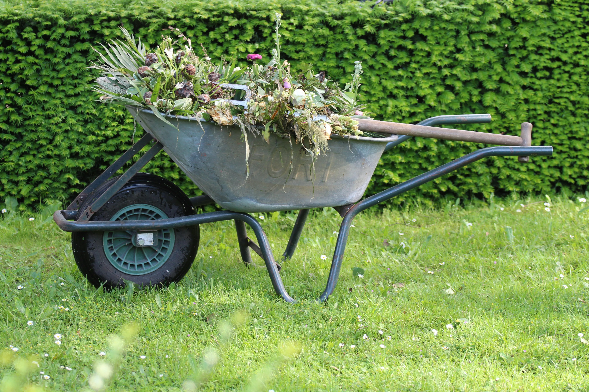

Entretien de jardins et d'espaces verts
Un jardin vivant et harmonieux demande un suivi régulier et attentif. Chez Lucas Jardins, nous proposons des prestations d’entretien personnalisées, que ce soit pour un espace privé, une résidence, une entreprise ou une collectivité.
Un entretien pensé avec vous
Parce que chaque jardin est unique, nous établissons avec vous un plan d’entretien sur mesure. Notre approche est basée sur l’écoute de vos besoins, de votre rythme de vie et des spécificités de votre terrain :
- Évaluation initiale : Visite sur place pour observer la configuration du jardin, le type de végétation, le climat local et vos priorités.
- Plan d’entretien personnalisé : Nous définissons ensemble la fréquence des interventions (hebdomadaire, mensuelle, saisonnière) et les tâches à effectuer.
- Flexibilité : Vous avez un événement à venir ? Des besoins ponctuels ? Nous ajustons nos passages selon vos disponibilités et envies.
- Suivi dans le temps : Nos jardiniers vous conseillent sur les soins à apporter au fil des saisons, pour préserver la beauté de votre espace vert.

Nos prestations d’entretien
Nous intervenons avec soin et professionnalisme pour entretenir vos extérieurs tout au long de l’année :
➡ Tonte de pelouses
Pour garder une pelouse verte, dense et bien structurée, nos équipes effectuent une tonte régulière, avec réglage personnalisé de la hauteur de coupe.
➡ Taille des haies et arbustes
Haies défensives, décoratives ou fruitières : nous taillons au bon moment, selon les règles de l’art, pour favoriser la santé et l’esthétique de vos plantations.
➡ Désherbage manuel ou sélectif
Nous privilégions des techniques respectueuses de l’environnement, pour un jardin propre sans produits chimiques agressifs.
➡ Ramassage de feuilles et nettoyage
En automne ou après une intervention, nous nettoyons et évacuons les déchets verts pour laisser votre jardin impeccable.
➡ Traitements naturels & éco-gestion
Sur demande, nous pouvons appliquer des engrais biologiques, pratiquer le paillage ou installer des solutions écologiques comme des hôtels à insectes.
